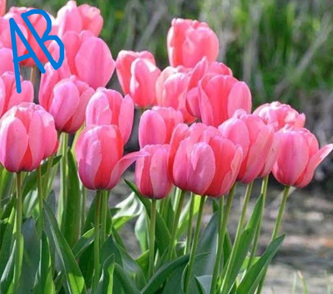

Tulips are erect flowers with long,broad,parallel-veined leaves and a cup-shaped,single or double flowervat the tip of stem.This beautiful flower is found all over the world.There is a complete lack of smell in this flower.The sight of tulips in enchanting,pure and mixed red,golden and purple shades captivares the audience.
Some tulips are varicolored as a result of a viral disease carried and transferred to the plants by aphids.
